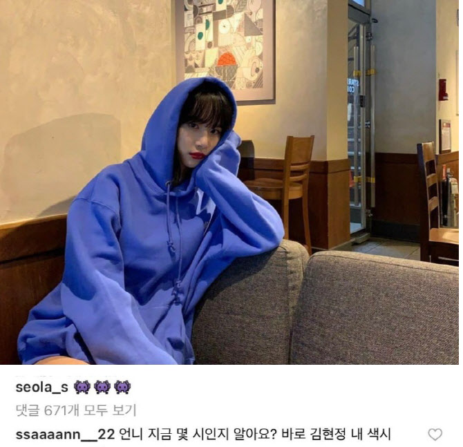

안산 Ansan
Ansan achieved 3 Gold Medal on 2020 Tokyo Olympic in Archery
Ansan cried while watching Ohmygirl Live
Ansan is a fan of WJSN
Ansan is a fan of WJSN
당시 안산은 “언니 지금 몇 시인지 알아요? 바로 김현정 내 색시”라는 댓글로 팬심을 드러냈다. 이번 올림픽을 통해 보여준 안산의 집중력과 자신감에 많은 이들이 환호했고, 뜨거운 응원을 보냈다. 때문에 안산이 공개적으로 좋아한다고 밝혔던 그룹 마마무와 우주소녀, 밴드 루시 등 유명인들도 주목을 받고 있다.

Ansan Instagram
Please enable JavaScript to view the
comments powered by Disqus.